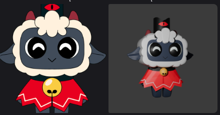
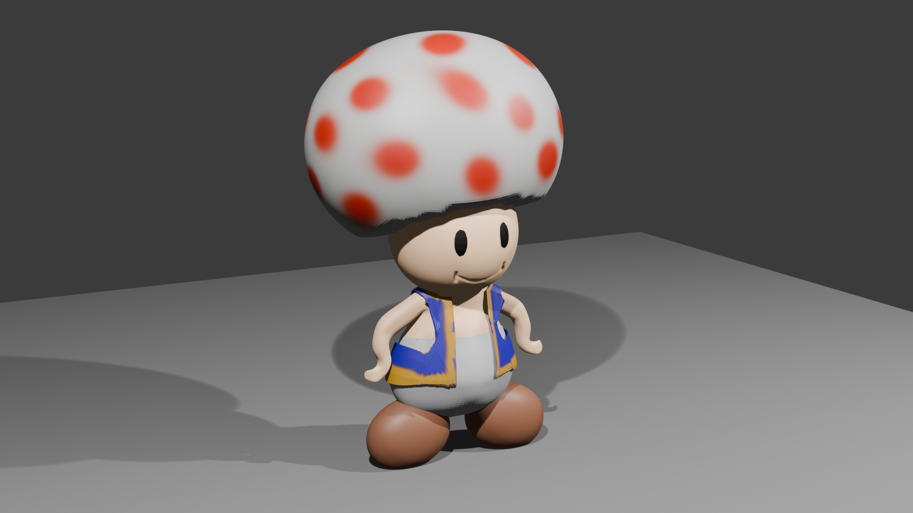
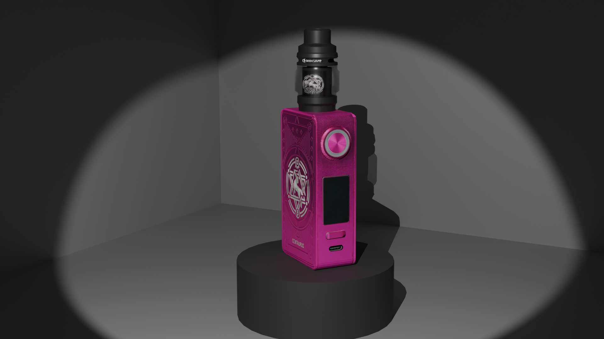
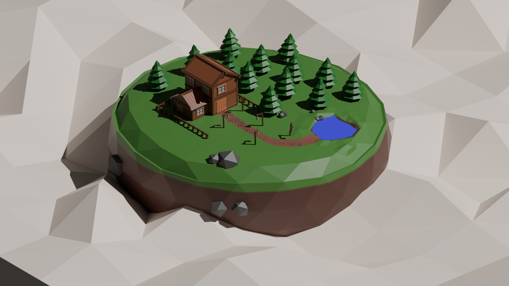
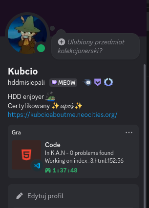
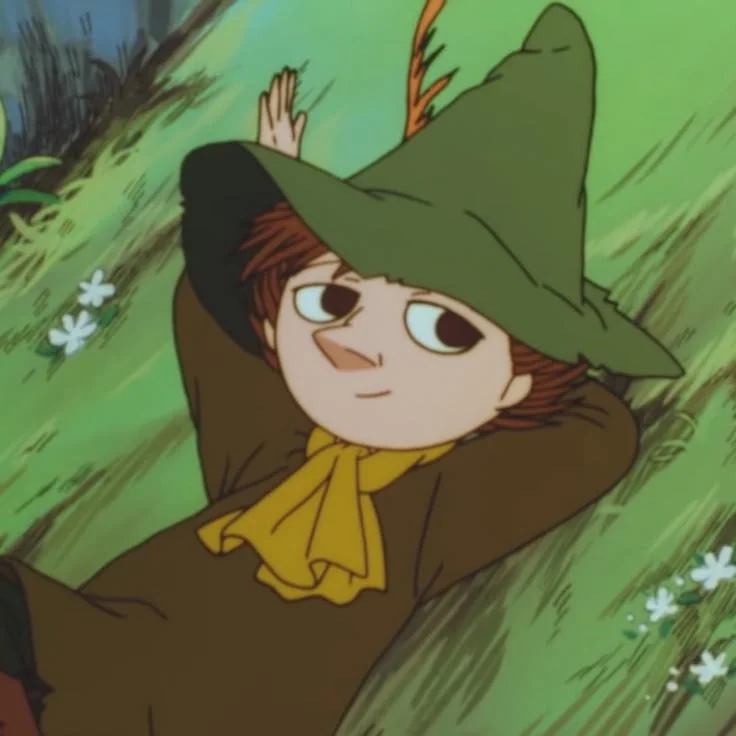
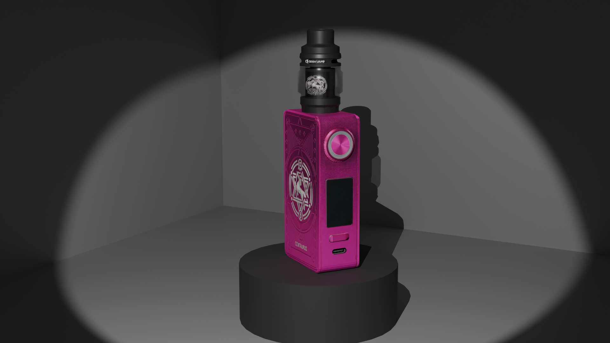
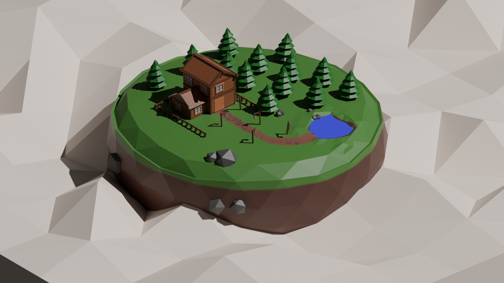
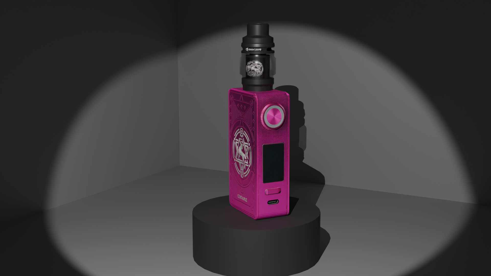
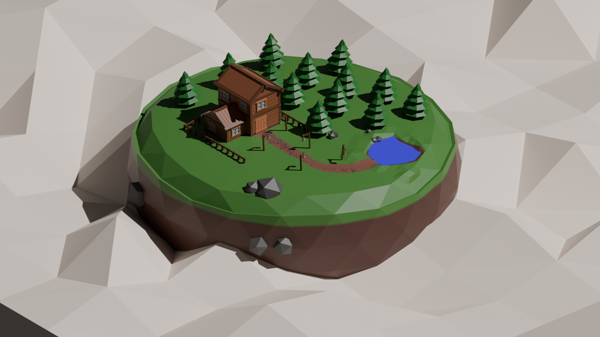

Nazywam się Kuba (Kubcio / HDDmisiepali)
Jestem 18 letnim człowieczkiem z czatów discorda
Amatorsko tworzę strony internetowe na własny użytek oraaz od czasu do czasu modeluje w 3D
W przyszłości chciałbym rozwinąc się w modelowaniu 3D oraaz programowaniu
Od niedawna uczę się języków zagranicznych (Rosyjski, Francuski) (nie licząc językow uczonych w szkole)
Ćwiczę kalistenikę oraz od czasu do czasu cardio (bieganko / rowerek)
.
Co uwielbiam?
Co uwielbiam? Uwielbiam naturę
Kocham spacerkować, chodzić bez celu słuchając muzyczki :3
Uwielbiam również stare bajki (muminki, reksio, pingu, krecik)
Oraaaz spędzać czas z znajomymi :3
Jaki jestem?
Jaki jestem? Hmm... Jestem otwarty na nowe znajomośći!! :3 (oczywiście te które mają sens)
Jestem miły, czuły, pomocny, oraz staraam się być wyrozumiały ^^ (przynajmniej tak mi się zdaje)
Czasami zawiesza mi się mózg x3, wtedy potrzebuję chwili na przetworzenie informacji
Nick wziął się stąd że w komputerze nie miałem wejscia na kolejny dysk
aaa nie miałem miejsca to wziąłem stary 10 letni dysk hdd z laptopa
i podłączyłem go przez przejsciówkę na usb podczas grania w np bardziej wymagające gierki lub
renderowaniu modelu
dysk wydawał dźwięki niczym reaktor jądrowy w Czarnobylu XDD
×
Modele zrobione w blenderze
Byłoooo ich owiele więcej lecz KOCHANY HDD musiał powiedzieć papa




×
Uwielbiam Muminki, dlatego mam Snufkina (Włóczykija) w pfp na dc
Jest to moja ulubiona postać :3 (I luv him) Kocham jego osobowosc


×
Imię: Kubcio
Wiek: 18
Wzrost: 178 cm
Status: Wolny / Szukam!!!
Zainteresowania: Programowanie, modelowanie 3D, języki obce
Hobby: Kalistenika, spacery, granie w gry
Ulubione bajki: Muminki, Reksio, Pingu, Krecik
Ulubione gry: Minecraft, Cult Of The Lamb, Overwatch 2, Sea Of Thieves, Ets2
Cechy charakteru: Miły, pomocny, czuły, niesmiały, otwarty na nowe znajomości, wyrozumiały
Więcej pv na dc :3

 


